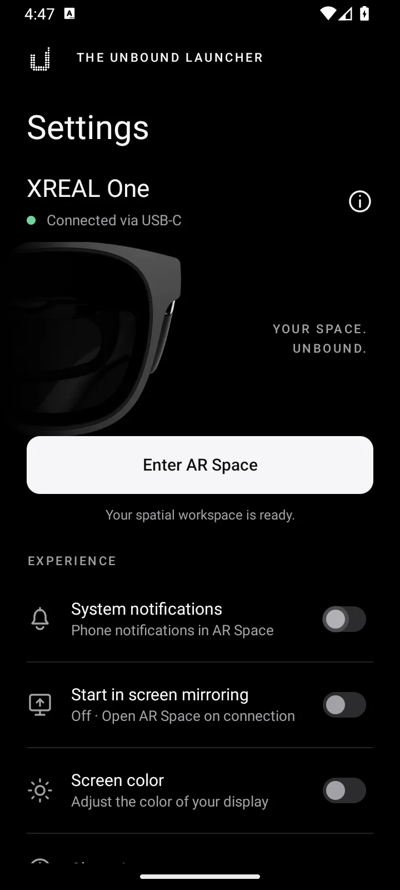
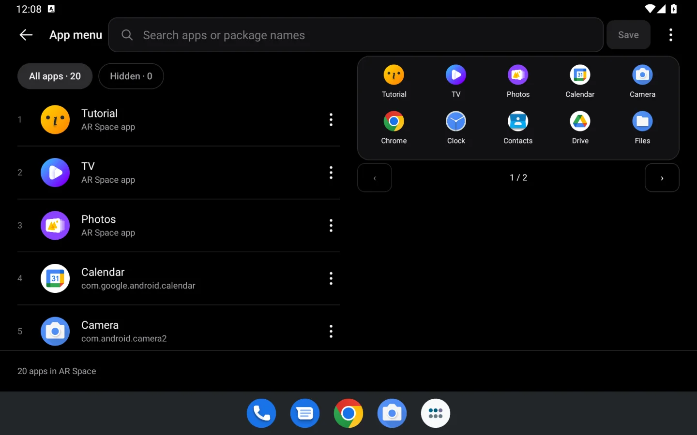

MORE SPACE ✳ LESS LIMITS ✳ YOUR APPS ✳ YOUR RULES ✳ MORE SPACE ✳ LESS LIMITS ✳ YOUR APPS ✳ YOUR RULES ✳
01 / THE BIG IDEA
A small screen was never the whole picture.
Unbound Launcher brings the Beam Pro’s NebulaOS spatial desktop to compatible Android phones. Plug in your XREAL glasses. Open your everyday apps. Give them room to breathe.
A fan-made project built on XREAL’s original spatial software, with a new phone interface and a growing set of improvements.
10↗
APP WINDOWS AT ONCE
3840×1080
NATIVE STEREO OUTPUT*
1APK
EVERYTHING IN ONE PACKAGE
0ROOT
KEEP YOUR BOOTLOADER LOCKED
*Measured at 60 Hz with XREAL One on tested hardware. Output and compatibility depend on your phone and glasses.
XREAL EYE / FEATURE HIGHLIGHT
Video recording. No time limit.
Capture video with XREAL Eye without a fixed launcher cutoff. The recording indicator shows elapsed time, and you choose when to stop.
Recording duration still depends on available phone storage, battery and temperature.
ROG XREAL R1 / CONFIRMED SUPPORT
ROG R1 glasses. Support confirmed.
ROG XREAL R1 support is implemented and confirmed working on real hardware, with integrated glasses recognition, connection handling and display setup.
02 / ROOM FOR MORE
Two was a limit. Ten is a playground.
Browse, chat, read, and keep your world open. The original two-window limit becomes ten simultaneous Android app windows.
AR SPACE / INTERACTIVE CONCEPT10 WINDOWS / OPEN
↗ BROWSER− ×
THE WORLD IS OPENGo somewhere new.
♫ MUSIC×
Space to wanderYOUR OWN SOUNDTRACK
↶ ▶ ↷
≡ NOTES×
What if?
☑ Think outside the screen
☑ Make a little space
□ See where it goes
Ideas don’t fit in boxes.
◷ CLOCK12:48TAKE YOUR TIME
▦ CALENDAR26MAKE ROOM
⌁ WEATHER21°OPEN SKIES
◈ PHOTOS
▤ FILES
☏ MESSAGES
⌘ TOOLS
Five times the room. Make it yours.
01 — 10
Your phone. Your pointer.
Spatial Mouse, vertical trackpad, or horizontal trackpad. Click, scroll, and move through your apps using the phone already in your hand.
Stay put. Or come along.
Keep your windows anchored in space or switch to smooth follow. The original spatial viewing modes stay at the heart of the experience.
Pick up where you left off.
Recent apps with window previews make it easier to return. The history belongs to your spatial windows, not everything you do on your phone.
03 / SIGNATURE, THROUGH AND THROUGH
All black. All considered.
True black. Quiet details. A little less between you and your space. The same Signature design, from first setup to the last setting.
MADE TO FEEL LIKE ONE APP
Your space starts here.
Model-aware glasses artwork, connection status, and one clear action to enter AR Space. Everything important, right where you need it.
ACTUAL APP INTERFACE · EMULATOR CAPTURES
BLACK IS NOT A THEME. IT’S THE CANVAS.

SIGNATURE OLED
LESS PHONE. MORE SPACE.
Screen off. World still on.
Turn off the phone panel while AR Space stays alive. Touch and motion pointing pause while it’s dark. Either volume button wakes the screen and restores your pointer.
12:48YOUR SPACE. UNBOUND.
AR SPACE ACTIVE
▱ ▱ ▱
The phone stays unlocked. This controls its panel, not its lock screen.
CURATE YOUR CORNER OF SPACE
A little order. A lot of you.
Search, reorder, hide, or restore your apps. Preview the headset layout from your phone, even with the glasses unplugged. Drafts and Undo have your back.
01↗Your browser⠿
02♫Your soundtrack⠿
03≡Your next idea⠿
YOUR APPS. YOUR ORDER.
04 / THINK OUTSIDE PORTRAIT
Good design makes room.
Phone. Foldable. Tablet. The interface follows the space you have, with side-by-side controls on wider screens and focused layouts when things get compact.

16:9 / 16:10 / FOLDABLE LAYOUTSLARGE TEXT WELCOME. DRAFTS STAY WITH YOU.
05 / THE DETAILS ADD UP
More than a bigger desktop.
Under the black surface, thoughtful changes make the everyday experience feel more natural.
01
Keep the flow.
Buffered presentation tackles visible tearing. More forgiving taps and protection from conflicting three-finger system gestures on compatible phones help trackpad input feel natural.
02
Stay in your space.
Launch handling helps apps open in their spatial windows. Slow or failed launches are isolated so the next window can keep working.
03
Colors that make sense.
Reworked app-window colors adapt to the GPU’s capabilities. Higher-resolution icons bring more detail, while some color differences between devices remain.
04
Awake when you are.
AR Space keeps the phone awake while the controller is visible and the glasses are connected, without rewriting your system screen timeout.
05
Your controls, closer.
Native phone menus keep Help, About, permissions and quick controls consistent. Fade transitions and preserved page state make it easier to find your way back.
06
A more deliberate port.
XREAL analytics uploaders are removed. Beam-specific firmware-update and boot-mode entry points are disabled for the phone environment.
07
A smoother arrival.
The connection animation stays with you until the phone controls and glasses output are ready. Automatic output where supported and a display-policy watchdog help manage the handoff.
08
Room from the start.
New app windows start at the medium size instead of filling almost your entire view. Saved per-app sizes stay yours, and the original per-model glasses defaults remain in use.
09
Your phone is still yours.
Use another phone app while AR Space keeps running. The ongoing notification takes you back to the controller or lets you stop AR. Locking the phone or unplugging ends the session.
10
Input, with fewer surprises.
Switch between Spatial Mouse and both trackpad modes with controller crash fixes. Keyboard prompts follow the actual keyboard, and canceled Home holds stay canceled.
11
Set your own downtime.
Choose an automatic-sleep timeout with the glasses unplugged. Your choice is saved and applied when a supported connection accepts it. Hardware validation is ongoing.
12
Better clues. Better help.
Opt-in debug exports collect display, startup and connection evidence for troubleshooting. Review the ZIP before sharing it with the community. Nothing uploads automatically.
Actively developed alpha. Earlier development builds have wearer-confirmed results; the exact 0.2.4 release APK still needs a separate glasses test. Compatibility and broader hardware validation remain ongoing.
06 / FROM POCKET TO POSSIBILITY
One phone. One APK. A whole new dimension.
The launcher, pairing client, and helper are bundled together. Set up on the phone itself, with Android’s own Wireless debugging.
Install the APK, read the introduction, and grant Display over other apps. Review optional access at your own pace.
02
Pair on your phone.
Connect to Wi-Fi and enable Wireless debugging in Developer options. Start pairing in Unbound and allow notifications. Keep Android’s pairing-code dialog open, then enter its six-digit code through the Unbound notification.
03
Plug in. Open up.
Wait for Ready, continue, and accept the terms to finish setup. Connect your XREAL glasses, choose Mirror if Android asks, and enter AR Space.
No computer. No terminal. No root. Developer options and Wireless debugging are still required. After a reboot, re-enable Wireless debugging and use Connect and start; Android may ask you to pair again.
BEFORE YOU BREAK OUT
Bring the right hardware.
USB-C is the connector. Video output is the requirement. A compatible port gets the picture to your glasses; the full experience still depends on the phone’s software and hardware.
Android 11 or newer64-bit ARM phone with Wireless debugging
USB-C DisplayPort Alt ModeWired video output is essential
Compatible XREAL or ROG XREAL R1 glassesUse the model’s recommended stable firmware. XREAL One is tested; ROG XREAL R1 support is confirmed
Wi-Fi for setup & about 1 GB of storageThe APK includes the original Unity spatial scene
07 / NO MYSTERY REQUIRED
A few things worth knowing.
Big ambitions. Clear expectations.
Will it work on my phone?
Your phone needs wired USB-C DisplayPort output, 64-bit ARM, Android 11+, and Wireless debugging. Those are prerequisites, not a guarantee. Display policies, GPU drivers and glasses firmware vary. Some combinations still have startup, stereo or reconnect problems. The same APK uses capability-based handling, but every combination needs testing.
How do I update from an earlier alpha?
Use Settings → About → Check for updates, or install the new APK. Updates from 0.1.1 and 0.1.2 alpha preserve app data, pairing and settings. Then use Settings → On-device ADB → Connect and start to restart the updated helper, and reconnect the glasses. Version 0.1.0 alpha and older My Glasses ports need to be uninstalled first; complete setup again after installing Unbound.
Do I need a computer or root?
No. The APK pairs with the phone’s own Wireless debugging service over its local loopback connection. A bundled helper runs as Android’s shell user to create app windows and route input. Setup needs Developer options, Wi-Fi, and Android’s pairing approval. After rebooting, restart the helper through the app.
Can I use other phone apps while in AR?
Yes. AR Space keeps running when you leave the phone controller to use another app. Tap the ongoing AR Space is running notification to return, or choose Stop AR to end the session. Unplugging the glasses, locking the phone or explicitly exiting also ends it.
Does every XREAL model support stereo?
The most complete working-session testing is with XREAL One. Recognizing another model does not establish support. An optional experimental 3D switch can try side-by-side output on models that normally start in 2D, but it does not guarantee correct geometry, tracking or a usable image.
Are ROG XREAL R1 glasses supported?
Yes. ROG XREAL R1 support is implemented and confirmed working on real hardware. Use a compatible Android phone and the model’s recommended stable firmware.
Is XREAL Eye video recording time-limited?
There is no fixed launcher time limit. XREAL Eye video recording shows elapsed time instead of a countdown, and you can stop recording manually. Available phone storage, battery, temperature and camera or encoder interruptions can still end a recording.
Can I watch protected streaming video?
Protected video in spatial app windows is not supported. DRM playback requires secure displays, which the shell helper cannot create. Miracast receiving is also unavailable when it requires permissions reserved for the phone manufacturer.
What happens when I change my app menu?
Changes stay in a draft until you save. When glasses are disconnected, your layout loads the next time AR Space starts. When AR Space is already running, Apply to glasses restarts it to load the new layout; open spatial windows close during that restart.
Is this an official XREAL app?
No. Unbound Launcher is an independent, fan-made alpha project built on XREAL’s original Beam Pro software. All rights to that original software remain with XREAL. The project is not affiliated with or endorsed by XREAL.
How can I help?
Join the community and share your phone model, Android version, glasses model and firmware, launcher version, and what happened during setup and AR Space. For a debug report, open Settings → Help, enable Debug mode and Collect debug data, then reproduce the problem. Turn collection off and tap Create debug file. Review the ZIP before sharing: logs can contain network addresses and app names. Nothing is uploaded automatically.